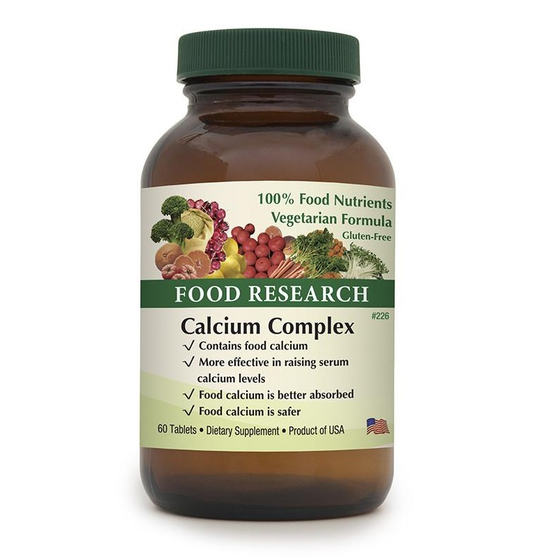

| Home Symptoms About Us | The Diagnosis Machine | Username Sign Out |
Food Research Calcium Complex
Calcium Complex is a 100% vegetarian Food supplement that is intended to supply 100% Food calcium. Research has shown in groups of people who consume 300 mgs of Food calcium per day or less from plant sources that they have low incidences of osteoporosis. 100% Food Calcium Complex is a plant source of calcium. It does not contain calcium mineral salts such as calcium carbonate, calcium citrate, or calcium lactate. Studies have shown that FOOD calcium is up to 8.79 times better absorbed and better retained than typical USP rock mineral salts.
$22.98 60ct | $58.98 240ct External Link 🔗Food Research Calcium Complex
Calcium Complex is a 100% vegetarian Food supplement that is intended to supply 100% Food calcium. Research has shown in groups of people who consume 300 mgs of Food calcium per day or less from plant sources that they have low incidences of osteoporosis. 100% Food Calcium Complex is a plant source of calcium. It does not contain calcium mineral salts such as calcium carbonate, calcium citrate, or calcium lactate. Studies have shown that FOOD calcium is up to 8.79 times better absorbed and better retained than typical USP rock mineral salts.
$22.98 60ct | $58.98 240ct External Link 🔗Food Research Calcium Complex
Calcium Complex is a 100% vegetarian Food supplement that is intended to supply 100% Food calcium. Research has shown in groups of people who consume 300 mgs of Food calcium per day or less from plant sources that they have low incidences of osteoporosis. 100% Food Calcium Complex is a plant source of calcium. It does not contain calcium mineral salts such as calcium carbonate, calcium citrate, or calcium lactate. Studies have shown that FOOD calcium is up to 8.79 times better absorbed and better retained than typical USP rock mineral salts.
$22.98 60ct | $58.98 240ct External Link 🔗